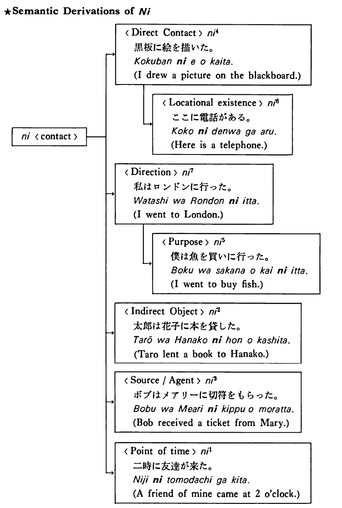

に (7) (B. 302)
- (ks).
- 私はきのうサンフランシスコに行った・行きました。
- I went to San Francisco yesterday.
- (a).
- ジムは来年アメリカに帰る。
- Jim is going back to America next year.
- (b).
- いつか私のうちに来ませんか。
- Wouldn't you like to come to my house sometime?
- (c).
- 彼らは角のレストランに入った。
- They entered the restaurant around the corner.
